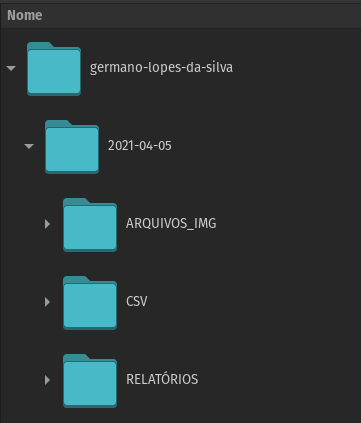
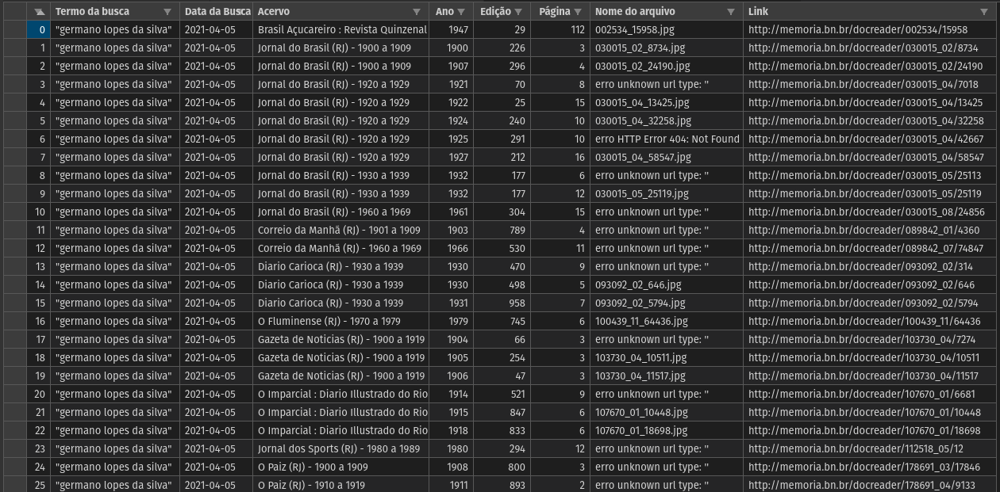
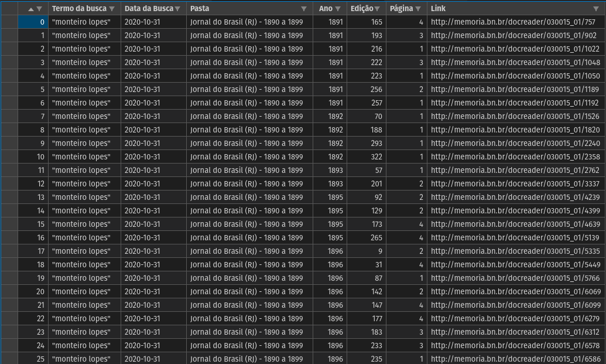

<div align="center"> <h3>Eixo 5 - Grandes Acervos de Dados Textuais nas Humanidades Digitais</h3> <br> <small>Coordenadores: Leonardo Nascimento (UFBA) e Eric Brasil (Unilab)</small> </div>
<div align="center"> <h2>Por uma Heurística Digital</h2> <h3>no ofício do Historiador</h3> </div> <div align="right"> <p> <a href="htpps://ericbrasiln.github.io">Eric Brasil</a> (IHL/UNILAB) </p> <img src="assests/LOGO-HISTÓRIA-BA-novo.png" style="zoom:10%;" /> <img src="assests/unilab.png" style="zoom:45%;" /> <img src="assests/labhd.png" style="zoom:23%;" /> </div>
**Disclaimer 1**: *Após um ano de pandemia, tudo mudou no mundo, no Brasil e tb nesse paper.* <div align="center"> <img src="assests/noun_head blow up_1898104.png" style="zoom:50%;" /> </div>
**Disclaimer 2**: *Desde domingo, 11/04/2021, as páginas da Fundação Biblioteca Nacional estão fora do ar!* <div align="center"> <img src="assests/noun_404 Error_1469633.png" style="zoom:50%;" /> </div>
<div align="center"> <blockquote class="twitter-tweet"><p lang="pt" dir="ltr">Por motivos técnicos, nosso site se encontra temporariamente fora do ar. Esperamos solucionar o problema o quanto antes. <a href="https://t.co/OUGMDWE3hJ">pic.twitter.com/OUGMDWE3hJ</a></p>— Biblioteca Nacional (@FBN) <a href="https://twitter.com/FBN/status/1381632367194963969?ref_src=twsrc%5Etfw">April 12, 2021</a></blockquote> <script async src="https://platform.twitter.com/widgets.js" charset="utf-8"></script> </div>
### Pesquisa histórica na era da abundância?
- **Digitalização** - A questão das **ferramentas / métodos X reflexões teóricas e epistemológicas** - Um passo atrás: a **heurística**. - Para tanto, busco apresentar uma ferramenta de suporte para a coleta de dados no repositório de jornais da BN, a [Hemeroteca Digital Brasileira](http://memoria.bn.br/) e realizar uma breve reflexão sobre as possibilidades para pesquisa.
## HDB e a noção de *Big Data* para um históriador social <div align="center"> <img src="assests/noun_Big data_2232102.png" style="zoom:40%;" /> </div> Quão grande deve ser o volume de dados para considerarmos Big Data?
### O motor e o reconhecimento: > In practice, a full-text search is often a Boolean fishing expedition for a set of documents that may or may not exist. (Underwood, 2014: 64) <div align="center"> <img src="assests/noun_Fishing_3839395.png" style="zoom:40%;" /> </div>
#### OCR da HDB? ABBYY + DocPro = cadê os dados? > For historians, the use of search interfaces is essential, but for further digital analysis the material it is necessary to be able to download the data, for example, as a data dump that includes the OCRed texts and metadata, often in international XML standards, such as the METS and ALTO formats. (Salmi, 2020: pos.1350)
### O retorno: Impactos epistemológicos <div align="center"> </div> O que o `output` das buscas nos permite pensar sobre a coleta de fontes?
[PRINT DA HDB – RESULTADO DE PERIÓDICO COM ACERVO ÚNICO] <div align="center"> <img src="assests/travolta.gif" style="zoom:100%;" /> </div>
[PRINT DA HDB – RESULTADO DE PERIÓDICO COM LISTA DE ACERVOS] <div align="center"> <img src="assests/travolta.gif" style="zoom:100%;" /> </div>
#### Heurística de "proximidade virtual" > o potencial de encontrar fontes on-line e de selecioná-las através de uma percepção de "proximidade", possibilitada por tecnologias de organização, busca e recuperação (Solberg, 2012).
### Codificando como um historiador <div align="center"> </div>
> Digital research methods create new and at times more stringent demands on accuracy, methodological thinkering, self-organization and colaboration than traditional historical research. (Paju, Oiva, Fridlunf, 2020, pos. 543).
Buscando contribuir na elaboração de caminhos heurísticos digitalmente críticos e conscientes, iremos apresentar e analisar um script de raspagem de dados criado a partir dos interesses específicos da pesquisa de um historiador utilizando a HDB.
#### Apresentação dos elementos técnicos <div align="center"> <p> <img src="assests/noun_python.png" alt="python" style="zoom:40%;" /></p> </div>
- Web scraping + Python - BeautifulSoup - Selenium - Pandas
#### Estrutura geral do código Através do Selenium, o raspador acessa a página específica de um determinado jornal (a partir de uma lista com os números que identificam cada jornal, chamado `bib` ). Em seguida itera em cada acervo do jornal, realizando a busca com o termo específico, acessando cada resultado e encontrando e acumulando os dados referentes a cada ocorrência.
#### Organização dos diretórios O programa cria um diretório `HDB>'nome-da-busca'>'YYYY-MM-DD'`. Em seu interior: 1) `ARQUIVOS_IMG`; 2) `CSV`; 3) `RELATÓRIOS`. <div align="center">  </div>
#### O CSV `Termo da busca, Data da Busca, Acervo, Ano, Edição, Página, Nome do arquivo, Link` 
#### Download das Imagens As imagens em baixa resolução (por enquanto) são salvas e armazenas na pasta `ARQUIVOS_IMG` .
##### Os Relatórios de busca (para cada acervo e) salvos na pasta `RELATÓRIOS`. ``` -Raspagem da HDB- Data e hora da busca: AAAA-MM-DD_HH-MM-SS Termo da busca: ; Jornal e Período: ; Total de ocorrências: ; Link da lista de resultados: http://memoria.bn.br/docreader/DocReader.aspx?bib=030015_02&Pesq=[busca] ```
#### Análise dos resultados <div align="center"> <p> <img src="assests/noun_data search_1509987.png" alt="search" style="zoom:40%;" /></p> </div>
##### Busca 1: "Germano Lopes da Silva" Foram retornadas 44 ocorrências em 17 jornais, processadas e finalizadas em 22 minutos. <br> <small>OBS: Esse tempo mais longo se deve em função do download das imagens de cada página com ocorrência. </small>
##### Busca 2: "Monteiro Lopes" Foram retornadas 5154 ocorrências em 13 jornais. <div align="center"> <p> </p> </div>
- O cálculo da média de tempo (em segundos) por ocorrência foi de **9,7 segundo**, numa internet com uma conexão de 50MB (sem o download de imagens). - Manualmente, cada ocorrência gastou em média **um minuto para salvar todos os dados que o *script* faz**. - Numa média de 1 minuto, para salvar todas as informações de cinco mil ocorrências seria preciso em torno de **85h de trabalho. Com o *script*, levou 14 h.**
### Seria apenas um acelerador? <div align="center"> <p> </p> </div>
A ferramenta garante a **coleta e organização dos dados de forma padronizada, atendendo os interesses específicos do pesquisador, possibilita a visualização desses dados também de forma organizada, torna possível retomar cada ocorrência no momento necessário ; e estabelece o registro dos caminhos da pesquisa, garantindo o rigor e transparência metodológica do trabalho.**
Possibilita **visualização temporal, perceber volume de ocorrências em períodos específicos; localização no espaço (dependendo do conjunto de jornais pesquisados).**
### Considerações finais <div align="center"> <p> </p> </div>
- A construção do código demanda do pesquisador um aprofundamento técnico e heurístico em relação à ferramenta de busca e ao próprio acervo que pretende buscar. - Ou seja, precisa compreender a estrutura da ferramenta (HTML/JS/CSS) e os padrões de organização, categorização e acesso elaborados em parte por uma equipe de programadores em parte por arquivistas/bibliotecários.
- Portanto, as possibilidades de coleta e organização dos dados dependem da construção do problema e interesses de pesquisa do investigador em constante diálogo com aspectos tecnológicos e arquivísticos. Nesse sentido é improdutivo separar técnica de teoria, método de epistemologia. - Perigo da distância entre o/a historiador/a e a elaboração das ferramentas de pesquisa e os dados que são disponibilizados;
- Importância de engajamento crítico com as ferramentas que usa; - Literacia digital, pensar algoritmicamente. - Desenvolver práticas de heurística digital que sejam coerentes tanto com as caracetísticas da ferramentas que usa e das fontes que vai trabalhar quanto com as reflexões teóricas básicas do ofício do/a historiador/a
<div align="center"> <h4>Muito obrigado pela atenção</h4> <p>e desejo <strong>vacinação, lockdown e auxílio emergencial</strong> contra a pandemia.</p> <br> <h3>Viva o SUS!</h3> </div>
## Contatos [Lattes](http://lattes.cnpq.br/6853705640900524) - [Orcid](https://orcid.org/0000-0001-5067-8475) - [Site](https://ericbrasiln.github.io/) - [ResearchGate](https://www.researchgate.net/profile/Eric_Brasil) - [Academia.edu](https://unilab.academia.edu/EricBrasil) - [GitHub](https://github.com/ericbrasiln/) - [Twitter](https://twitter.com/ericbrasiln) - [YouTube](https://www.youtube.com/channel/UC-tuyLIm7Ww_TDjKdHdnaAg) e-mail: ericbrasiln@protonmail.com